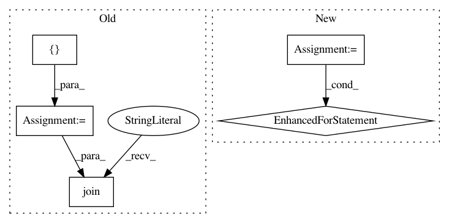

cea292769af4ac688649573a11b20f4d69024e3d,tests/unit_test/processor_units/test_processor_units.py,,test_bert_tokenizer_unit,#,145
Before Change
def test_bert_tokenizer_unit():
vocab_tokens = [
"[UNK]", "[CLS]", "[SEP]", "want", "////want", "////ed", "wa", "un", "runn",
"////ing", ","
]
with tempfile.NamedTemporaryFile(delete=False) as vocab_writer:
vocab_writer.write("".join(
[x + "\n" for x in vocab_tokens]).encode("utf-8"))
vocab_file = vocab_writer.name
After Change
"[UNK]", "glands", ".", "此", "外", ",", "在", "显", "微", "镜", "下"]
vocab_dict = {}
for idx, token in enumerate(vocab_tokens):
vocab_dict[token] = idx
clean_unit = units.BertClean()
cleaned_text = clean_unit.transform(raw_text)
chinese_tokenize_unit = units.ChineseTokenize()
chinese_tokenized_text = chinese_tokenize_unit.transform(cleaned_text)
In pattern: SUPERPATTERN
Frequency: 4
Non-data size: 5
Instances
Project Name: NTMC-Community/MatchZoo
Commit Name: cea292769af4ac688649573a11b20f4d69024e3d
Time: 2019-05-15
Author: 469413628@qq.com
File Name: tests/unit_test/processor_units/test_processor_units.py
Class Name:
Method Name: test_bert_tokenizer_unit
Project Name: ray-project/ray
Commit Name: 82f9c7014e2d0acd3e3869066f5dc3142ec9e7a7
Time: 2020-12-17
Author: 62982571+Gekho457@users.noreply.github.com
File Name: python/ray/autoscaler/_private/command_runner.py
Class Name: KubernetesCommandRunner
Method Name: _home
Project Name: keras-team/keras
Commit Name: e74a37438b5389ae19eb61b431859f9789100874
Time: 2017-05-22
Author: ajoseph.lobo@gmail.com
File Name: keras/backend/tensorflow_backend.py
Class Name:
Method Name: function
Project Name: OpenNMT/OpenNMT-py
Commit Name: 63871d5ab3301d015805abddd8f4259680d6a24a
Time: 2017-09-21
Author: bpeters@coli.uni-saarland.de
File Name: translate.py
Class Name:
Method Name: main